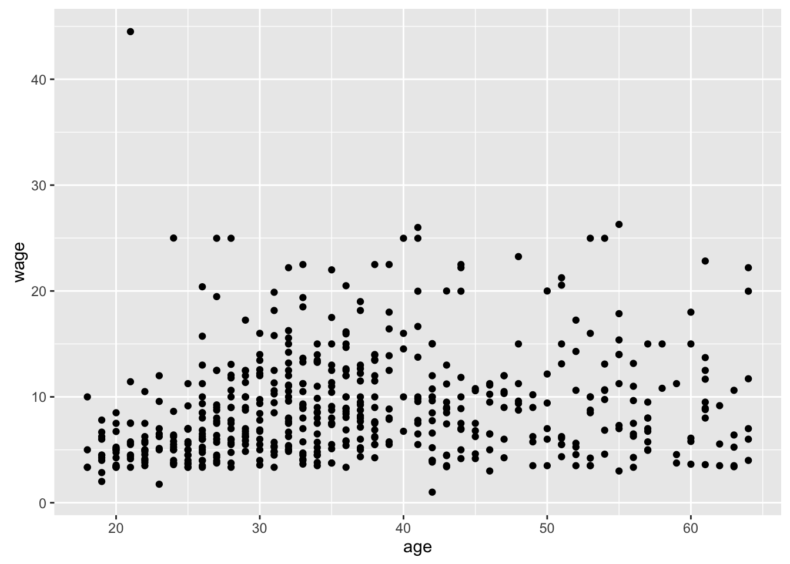

R is an open-source platform. As such, many people can contribute their ideas and the community of users can choose among them. One of the areas where this plays out is in graphics. There are many ways to draw graphics using R.
The graphics system we use in this course is provided by the "ggplot2" package. This is one of many extremely popular packages written by Hadley Wickham, the chief scientist at RStudio.
The functions provided by "ggplot2" constitute what can be called an Application Programming Interface (API). Many people find the "ggplot2" API hard to figure out at first. In the Data Computing textbook, a menu-driven alternative is provided.
In these exercises, you’ll use yet another alternative interface provided by the "statisticalModeling" package. This interface, implemented by functions whose names start with gf_, allows you to use model formulas to specify "ggplot2" graphics.
A formula in R is an expression built around the ~ (“tilde”) sign. It enables you to describe a relationship among variables. For instance: wage ~ age means “wage versus age.”
In this exercise, you’ll use a simple function for creating scatterplots. To illustrate its use, here’s an example:
data(CPS85, package = "mosaicData")
gf_point(wage ~ age, data = CPS85)
Now it’s your turn …
library() to attach the "statisticalModeling" package, which provides the gf_point() function and others connected to "ggplot2".data() to load the CountryData table from the "DataComputing" package.gf_point() makes a scatter plot: one point for each case.
death) versus birth rate (birth) the CountryData. This means that death should be on the left side of the formula and birth on the right side.library(___)
data(CountryData, package = "DataComputing")
gf_point(__formula__, data = __datatable__)The formula will be `death ~ life`library("statisticalModeling")
data(CountryData, package = "DataComputing")
gf_point(death ~ birth, data = CountryData)test_0 <- fcall("library('statisticalModeling')", "give `library()` the name of the package to be loaded, putting the name in quotes.")
test_1 <- fcall("data(whatever, package = 'DataComputing')", "the data table is provided by the `DataComputing` package.")
test_1a <- fcall("data(whatever, package = 'statisticalModeling')", mistake = TRUE, "the CountryData data table is provided by the `DataComputing` package, not `statisticalModeling`.")
test_2 <- fcall("gf_point()", "use the `gf_point()` function to make the scatter plot.")
test_3 <- fcall("whatever ~ whatever", "remember the tilde ~ in the formula")
test_3a <- fcall("death ~ whatever", "the y-variable `death` is on the left side of the tilde")
test_3b <- fcall("whatever ~ birth", "the x-variable `births` goes on the right side of the tilde")
test_4 <- fcall("gf_point(whatever, data = CountryData)", "the `data =` argument should be given the datatable `CountryData`.")
USER_CODE %>% test_0 %>% test_1 %>% test_1a %>% test_2 %>%
test_3 %>% test_3a %>% test_3b %>% test_4The gf_counts() function constructs a graphic with bars representing the counts in each category of a specified variable. For instance, the graphic shows the number of people in a clinical study of treatment for addition whose problem is linked to each of several drugs.
The count itself is not a variable, but is being derived from a categorical variable, in this case the variable substance. The formula given to gf_counts will have only a right-hand side: ~ substance. This tells what variable to place on the x-axis. The count will be calculated and placed on the y-axis.
CPS85 from the package "mosaicData".gf_counts() to graph the number of people in CPS85 who work in each sector of the economy.library("statisticalModeling")
data(___, package = ___)
gf_counts( __one_sided_formula__, data = ___)# Remember, the formula will be one-sided: ~ sectorlibrary("statisticalModeling")
data(CPS85, package = "mosaicData")
gf_counts( ~ sector, data = CPS85)test_0 <- fcall("library('statisticalModeling')", "attach the `statisticalModeling` package with `library()`.")
test_1 <- fcall("data(CPS85, package = 'mosaicData')", "attach the CPS85 data from the `mosaicData` package.")
test_2 <- fcall("gf_counts()", "use `gf_counts() to make the bar graph.")
test_3 <- fcall("~ sector", "the formula should be one sided, with `sector` to the right of the tilde.")
test_4 <- fcall("gf_counts(whatever, data = CPS85)", "the `data=` argument to `gf_counts()` should be set to the data table `CPS85`.")
USER_CODE %>% test_0 %>% test_1 %>% test_2 %>% test_3 %>% test_4Remember, the formula will be one-sided: ~ sector.
Box-and-whisker plots are a way to show how a quantitative variable (like wage in the CPS85 data) depends on a categorical variable (like sector). Use the gf_boxplot() function to draw these. The formula will be of the form quantitative_var ~ categorical_var.
gf_boxplot() to make a box-and-whisker plot of wage versus sector in the CPS85 data.library("statisticalModeling")
data(CPS85, package = "mosaicData")
___(___, ___)# Fill in the left blank (`___`) with the appropriate formula.
# The right blank should be filled in with the `data = ` argument,
# specifying, of course, the data table to use in making the plot.library("statisticalModeling")
data(CPS85, package = "mosaicData")
gf_boxplot(wage ~ sector, data = CPS85)test_1 <- fcall("gf_boxplot()",
"use 'gf_boxplot()' to make the graph.")
test_2 <- fcall("whatever ~ whatever", "remember the formula.")
test_3 <- fcall("whatever ~ sector", "the sector variable should be on the right side of the tilde.")
test_4 <- fcall("wage ~ whatever", "the wage variable goes on the left side of the formula.")
USER_CODE %>% test_1 %>% test_2 %>% test_3 %>% test_4